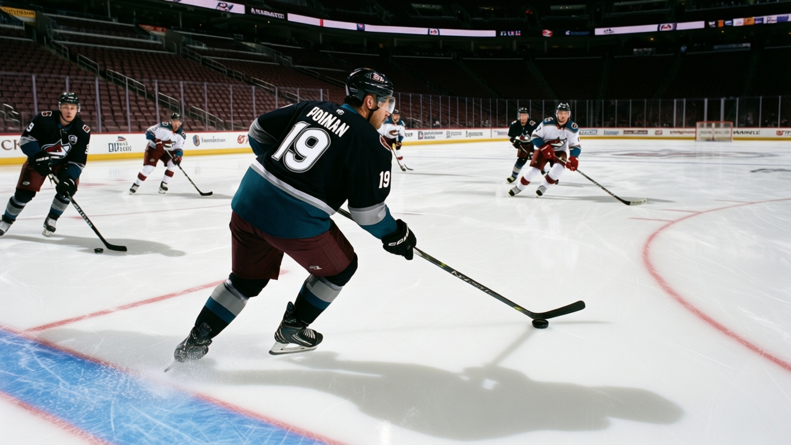
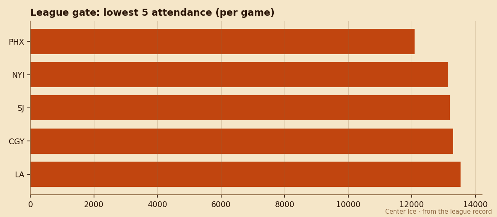

Payroll Dumps: Phoenix's $9.60M Expiring Class Can't Fit in 12,092 Seats
Four players rated 83 or better are unsigned past June. The Coyotes' building is the smallest in the league.
 E.J. "Ears" CallahanInsider · The Hot Stove
E.J. "Ears" CallahanInsider · The Hot Stove

Phoenix will not keep all four expiring names past June

Phoenix carries $9.60M in expiring salary across four players rated 83 or higher on the Bureau's Book, and the building that pays for it seats 12,092 per night, the lowest number in the league.

 Sean Burke84 is 90 overall at $4.20M.
Sean Burke84 is 90 overall at $4.20M.  Mike Sillinger84 is 88 at $1.80M.
Mike Sillinger84 is 88 at $1.80M.  Shane Doan80 is 86 at $2.40M.
Shane Doan80 is 86 at $2.40M.  Paul Mara77 is 83 at $1.20M. Four contracts, one June deadline, and a revenue line of $44.54M that does not grow when the seats are this few.
Paul Mara77 is 83 at $1.20M. Four contracts, one June deadline, and a revenue line of $44.54M that does not grow when the seats are this few.
The arithmetic does not close
 Phoenix Coyotes sit 13-17-4 for 32 points, middle of the Pacific, neither a buyer nor a seller by record. The Bureau's Development Index does not flag any of the four below their base, which means their trade value is current and not yet discounted. That window closes when the first-round race starts separating pretenders from playoff clubs in February.
Phoenix Coyotes sit 13-17-4 for 32 points, middle of the Pacific, neither a buyer nor a seller by record. The Bureau's Development Index does not flag any of the four below their base, which means their trade value is current and not yet discounted. That window closes when the first-round race starts separating pretenders from playoff clubs in February.
The payroll is $47.81M against that $44.54M revenue. Profit is $16.59M, so the books balance through sources beyond the gate. But gate revenue is what justifies a raise. With 12,092 fans per game and a ticket price of $80, Phoenix cannot pay Burke, Doan, Sillinger, and Mara at market and expect the room to feel good about it when the attendance is this thin.
Who goes first
Burke is 37 years old with 29 games played. No club trades for a 37-year-old on an expiring deal unless he is a rental for a Cup window, and Phoenix does not have one. The league sources around the Meadowlands expect the Coyotes to let him walk and hand the crease to a cheaper body.
Doan is 28, carries a $2.40M cap hit, and has 27 points in 35 games. He is the one a contender wants at the deadline: a 28-year-old right wing with speed and a manageable number. If Phoenix is going to get anything back, it is Doan.
A hand keeps Sillinger out until January 3. His $1.80M is the cheapest of the three top-rated names, which makes him the easiest to re-sign at a discount or move for a mid-round pick once he's healthy.
Mara at 83 and $1.20M is the odd one out. A 25-year-old defenseman with 28 points in 35 games is a trade asset, not a re-signing priority.
The Coyotes are not a fire-sale team. Their morale average is 91.6, mid-pack. Nobody is angry. But the building is the constraint, and when the building is the constraint, the contracts walk in June whether you like it or not.